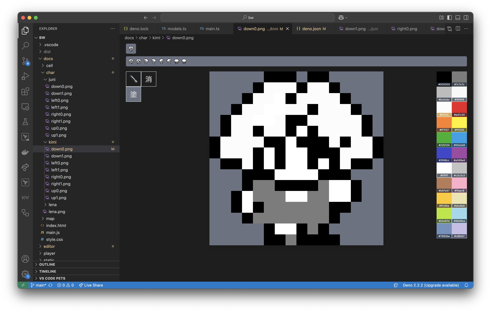
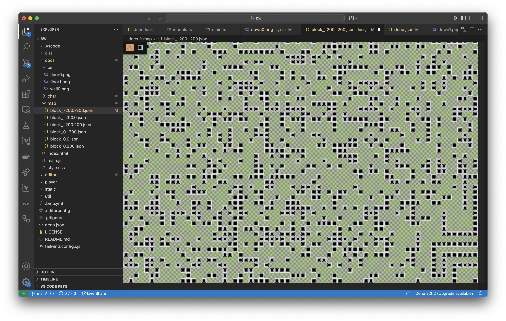
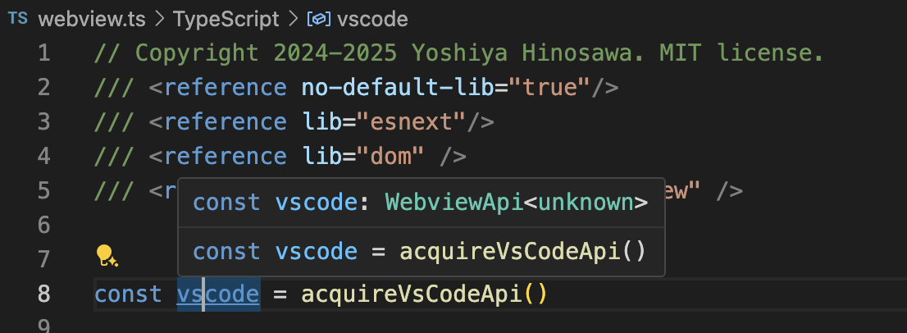
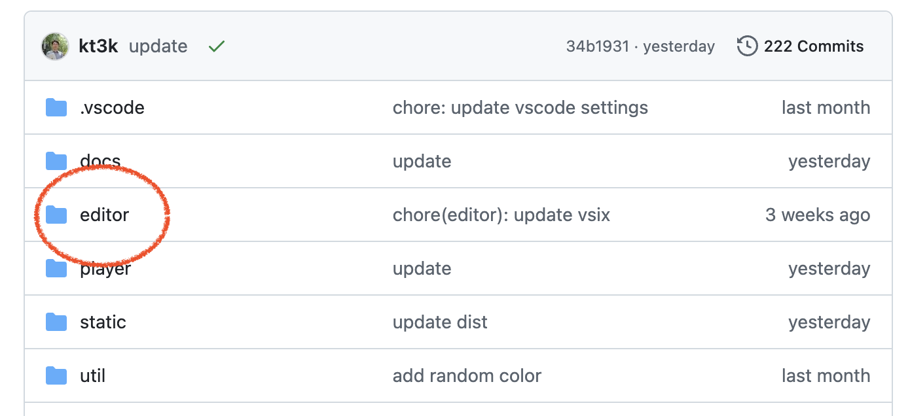

class: middle center <img src="assets/vscode-logo.png" width="128"> ## VSCode Extension を<br/>Deno で作ってみた --- ## Yoshiya Hinosawa <img src="./assets/hinosawa.jpg" width="180" /> - x.com / github - @kt3k - Web エンジニア - Deno Land 社メンバー (2021 ~) --- class: center [デモ](https://kt3k.github.io/bw/) (ゲーム) --- Extension 1 (ピクセルエディター)  --- Extension 2 (マップエディター)  --- ## 目的 Deno の DX で VSCode Extension を開発したい -- - Deno で型チェック - Deno でビルド - Deno でリント - Deno でフォーマット したい --- ## レシピ - `esbuild-deno-loader` - `@ts-types` --- ## esbuild-deno-loader - Deno のバンドラー - Deno のモジュール解決ルールで書いたコードを<br/>バンドルして1ファイルに出来る -- ```js import "jsr:@std/path@1"; import "npm:react@19.0.0"; import "https://deno.land/x/jose@v6.0.8"; ``` 例えば、上のような import をバンドル可能 --- ## VSCode Extension 用ビルド ```js import * as esbuild from "npm:esbuild@0.24"; import { denoPlugins } from "jsr:@luca/esbuild-deno-loader@0.11"; import { resolve } from "jsr:@std/path@1"; const result = await esbuild.build({ plugins: [...denoPlugins({ configPath: resolve("path/to/deno.json") })], entryPoints: ["src/extension.ts"], outfile: "out/extension.js", bundle: true, external: ["vscode"], format: "cjs", }); esbuild.stop(); ``` --- ## ビルドのポイント 1 ```js import * as vscode from "vscode"; ``` をどう解決するか? -- ```js external: ["vscode"] ``` で、"vscode" のインポートがバンドルされなくなる <br/> -- => 実行時に "vscode" が import される<br/> -- => 動く! --- ## ビルドのポイント 2 VSCode は CommonJS しか読めない -- ```js format: "cjs" ``` の指定で、出力形式が CommonJS になる。 --- ## VSCode Extension 用ビルド (再掲) ```js import * as esbuild from "npm:esbuild@0.24"; import { denoPlugins } from "jsr:@luca/esbuild-deno-loader@0.11"; import { resolve } from "jsr:@std/path@1"; const result = await esbuild.build({ plugins: [...denoPlugins({ configPath: resolve("path/to/deno.json") })], entryPoints: ["src/extension.ts"], outfile: "out/extension.js", bundle: true, external: ["vscode"], format: "cjs", }); esbuild.stop(); ``` --- class: middle center inverse ちなみに --- ## @kt3k/pack という esbuild と esbuild-deno-loader のラッパー CLI を使うと -- ```sh deno -A jsr:@kt3k/pack src/extension.ts \ -o out/extension.js --external vscode --format cjs ``` と、少し簡潔に書けます --- class: middle center inverse ## Deno で型をつける --- ## 型チェックのポイント ```js import * as vscode from "vscode"; ``` => モジュール解決エラー --- ## 型チェックのポイント ```js import * as vscode from "vscode"; ``` にどうやって型をつけるか? -- <br/>=> `@ts-types` ディレクティブを使う --- ## 型チェックのポイント ```js // @ts-types="npm:@types/vscode" import * as vscode from "vscode"; ``` -- @ts-types を指定すると、本来の解決ルールと関係なく、指定された型定義モジュールで型を解決するようになる --- class: middle center inverse Extension のメインスレッドの型はそれで良いとして<br/> Webview側は? --- ## 型チェックのポイント Webviewの型付け ファイルの先頭にこれを書けば OK ```js /// <reference no-default-lib="true"/> /// <reference lib="esnext"/> /// <reference lib="dom" /> /// <reference types="@types/vscode-webview" /> ``` --- ## 型チェックのポイント ```js /// <reference no-default-lib="true"/> ``` 型を全てリセットする(消す) --- ## 型チェックのポイント ```js /// <reference lib="esnext"/> /// <reference lib="dom" /> ``` JS と DOM (ブラウザ) の型を入れる --- ## 型チェックのポイント ```js /// <reference types="@types/vscode-webview" /> ``` @types/vscode-webview<br/>(VSCode の Webview の型が入ってるパッケージ) --- ## 型チェックのポイント Webviewの型付け  --- ## その他 - リント - deno lint で OK - フォーマット - deno fmt で OK --- ## まとめ Deno で VSCode Extension 開発は - Deno で型チェックできる - Deno でビルドできる - Deno でリントできる - Deno でフォーマットできる --- class: middle center inverse Deno の DX で十分に VSCode Extension 開発が可能 --- class: middle center サンプルレポジトリ [github.com/kt3k/bw](https://github.com/kt3k/bw)  ご清聴ありがとうございました 🙇♂️
loading...